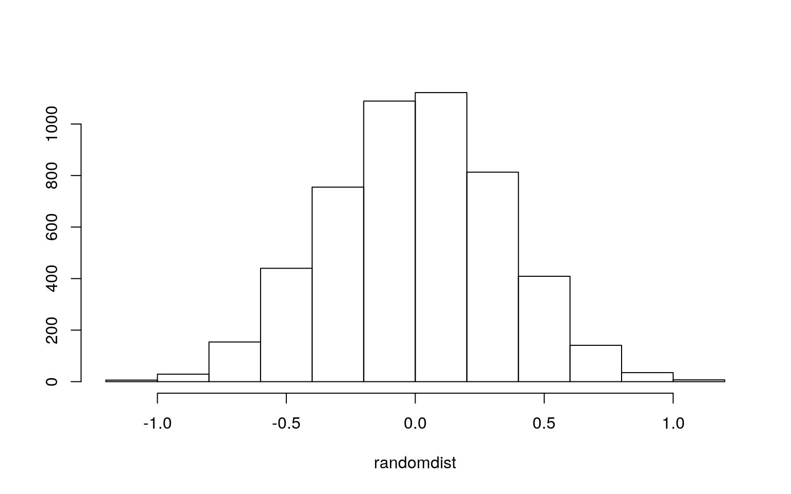

A knitted R Markdown document (as a PDF) and the raw R Markdown file (as .Rmd) should both be submitted to Canvas by 11:59pm on 5/1/2020. These two documents will be graded jointly, so they must be consistent (i.e., don’t change the R Markdown file without also updating the knitted document). Knit an html copy too, for later! In the .Rmd file for Project 2, you can copy the first code-chunk into your project .Rmd file to get better formatting. Notice that you can adjust the opts_chunk$set(…) above to set certain parameters if necessary to make the knitting cleaner (you can globally set the size of all plots, etc). You can copy the set-up chunk in Project2.Rmd: I have gone ahead and set a few for you (such as disabling warnings and package-loading messges when knitting)!
Like before, I envision your written text forming something of a narrative structure around your code/output. All results presented must have corresponding code. Any answers/results/plots etc. given without the corresponding R code that generated the result will not be graded. Furthermore, all code contained in your final project document should work properly. Please do not include any extraneous code or code which produces error messages. (Code which produces warnings is acceptable, as long as you understand what the warnings mean).
Find one dataset with at least 5 variables that wish to use to build models. At least one should be categorical (with 2-5 groups) and at least two should be numeric. Ideally, one of your variables will be binary (if not, you will need to create one by discretizing a numeric, which is workable but less than ideal). You will need a minimum of 40 observations (at least 10 observations for every explanatory variable you have, ideally 20+ observations/variable).
It is perfectly fine to use either dataset (or the merged dataset, or a subset of your variables) from Project 1. However, you could also diversify your portfolio a bit by choosing a different dataset to work with (particularly if the variables did not reveal interesting associations in Project 1). The only requirement/restriction is that you may not use data from any examples we have done in class or lab. It would be a good idea to pick more cohesive data this time around (i.e., variables that you actually thing might have a relationship you would want to test). Think more along the lines of your Biostats project.
Again, you can use data from anywhere you want (see bottom for resources)! If you want a quick way to see whether a built-in (R) dataset has binary and/or character (i.e., categorical) variables, check out this list: https://vincentarelbundock.github.io/Rdatasets/datasets.html.
library(dplyr)
liftdatraw1 <- readr::read_csv("https://raw.githubusercontent.com/rfordatascience/tidytuesday/master/data/2019/2019-10-08/ipf_lifts.csv")
liftdataraw2<-na.omit(liftdatraw1)
liftdata<-liftdataraw2%>%select(sex,event,equipment,age,division,"bodyweight"=bodyweight_kg,"best3squat"=best3squat_kg,"best3bench"=best3bench_kg,"best3deadlift"=best3deadlift_kg,place)
liftdata3<-liftdataraw2%>%select(sex, "bodyweight"=bodyweight_kg, "maxsquat"=best3squat_kg, "maxbench"=best3bench_kg, "maxdead"=best3deadlift_kg, equipment)
liftdata <- liftdata[!is.na(as.numeric(as.character(liftdata$place))),]My dataset was found from GitHub’s Tidy Tuesday website and it contained information about powerlifting. Data about powerlifting competitions over time are included in the dataset. I will be focusing on seven of the variables described: bodyweight, sex, equipment type, place, max weight on three reps of deadlift, max weight on three repos of bench press, and max weight on thee reps of squats. The bodyweight variable is the weight of the individual powerlifter in kilograms. The max weight on three reps of deadlift, max weight on three repos of bench press, and max weight on thee reps of squats variables are all measured in kilograms. With that said, bodyweight, max weight on three reps of deadlift, max weight on three repos of bench press, and max weight on thee reps of squats are all numeric variables. The place is the result in standing of the competition in which the powerlifter participated in (ex. First place). The equipment type is a categorical variable in which it categorized the type of equipment the powerlifter used. The three categories of equipment type are raw, single-ply, and wraps. The last variable is sex. The sex variable is a binary variable with only a male or female option. This dataset was chosen as I participate in powerlifting personally and am interested in the differences in powerlifting statistics based on equipment types as well as differences between the two sexes.
mano<-manova(cbind(best3squat,best3bench, best3deadlift)~equipment, data=liftdata)
summary(mano)## Df Pillai approx F num Df den Df Pr(>F)
## equipment 2 0.12718 534.85 6 47256 < 2.2e-16 ***
## Residuals 23629
## ---
## Signif. codes: 0 '***' 0.001 '**' 0.01 '*' 0.05 '.' 0.1
' ' 1summary.aov(mano)## Response best3squat :
## Df Sum Sq Mean Sq F value Pr(>F)
## equipment 2 7169805 3584903 682.48 < 2.2e-16 ***
## Residuals 23629 124117267 5253
## ---
## Signif. codes: 0 '***' 0.001 '**' 0.01 '*' 0.05 '.' 0.1
' ' 1
##
## Response best3bench :
## Df Sum Sq Mean Sq F value Pr(>F)
## equipment 2 2544755 1272377 413.85 < 2.2e-16 ***
## Residuals 23629 72647615 3075
## ---
## Signif. codes: 0 '***' 0.001 '**' 0.01 '*' 0.05 '.' 0.1
' ' 1
##
## Response best3deadlift :
## Df Sum Sq Mean Sq F value Pr(>F)
## equipment 2 1280991 640495 160.8 < 2.2e-16 ***
## Residuals 23629 94116634 3983
## ---
## Signif. codes: 0 '***' 0.001 '**' 0.01 '*' 0.05 '.' 0.1
' ' 1liftdata%>%group_by(equipment)%>%summarize(mean(best3squat),mean(best3bench), mean(best3deadlift))## # A tibble: 3 x 4
## equipment `mean(best3squat)` `mean(best3bench)`
`mean(best3deadlift)`
## <chr> <dbl> <dbl> <dbl>
## 1 Raw 183. 118. 207.
## 2 Single-ply 225. 142. 224.
## 3 Wraps 236. 156. 263.pairwise.t.test(liftdata$best3squat,liftdata$equipment, p.adj="none")##
## Pairwise comparisons using t tests with pooled SD
##
## data: liftdata$best3squat and liftdata$equipment
##
## Raw Single-ply
## Single-ply < 2e-16 -
## Wraps 7.4e-09 0.22
##
## P value adjustment method: nonepairwise.t.test(liftdata$best3bench,liftdata$equipment,p.adj="none")##
## Pairwise comparisons using t tests with pooled SD
##
## data: liftdata$best3bench and liftdata$equipment
##
## Raw Single-ply
## Single-ply < 2e-16 -
## Wraps 5.2e-08 0.057
##
## P value adjustment method: nonepairwise.t.test(liftdata$best3deadlift,liftdata$equipment,p.adj="none")##
## Pairwise comparisons using t tests with pooled SD
##
## data: liftdata$best3deadlift and liftdata$equipment
##
## Raw Single-ply
## Single-ply < 2e-16 -
## Wraps 2.4e-12 8.9e-07
##
## P value adjustment method: none#probability of type I error
1-(.95)^9## [1] 0.3697506#Bonferroni correction
0.05/13## [1] 0.003846154The MANOVA test was chosen to be ran to determine whether the variables best3squat, best3bench, and best3deadlift differed by the type of equipment used. The null hypothesis for the test was determined to be: The variables best3squat, best3bench, and best3deadlift were equal for the three equipment types described. The alternative hypothesis was determined to be: For at least one of the variables (best3squat, best3bench, and best3deadlift), the equipment type mean was different at least once. The MANOVA test results were significant which showed that there were significant differences found between the types of equipment in the dataset on the variables best3squat, best3bench, and best3deadlift (Pillai trace = 0.127, pseudo F(6,47256)=534.85, p<0.0001). In addition, a univariate ANOVA was performed to determine the responses that shows the mean differences across the groups (best3squat, best3bench, and best3deadlift). The univariate ANOVA for best3squat, best3bench, and best3deadlift were determined to be significant (F(2,23629)=682.48, p<0.0001, F(2,23629)=413.85, p<0.0001, and F(2, 23269)=160.8, p<0.0001 based on the order of best3squat, best3bench, and best3deadlift). After the t-test was performed, it was determined that raw and wraps and raw and single-ply differed significantly for best3squat. Raw and wraps, raw and single-ply and single-ply and wraps were determined to differ significantly for best3deadlift. Raw and single-ply and raw and wraps differed significantly for best3bench. There was a total of 1 MANOVA, 3 ANOVA, and 9 t-tests performed in the order described for a grand total of 13 tests. The probability of type I error was calculated to be 0.37, and the adjusted significance level was calculated to be 0.0038 according to the Bonferroni correction. The post-hoc tests were not affected by the new significance and the significance of the differences remained the same. The assumptions for the MANOVA test performed includes random samples, independent observation, multivariate normality of the dependent variables, homogeneity of the within group covariance matrices, a linear relationship between the dependent variables, no extreme multivariate or univariate outliers, and no multicollinearity. Unfortunately, not all of the assumptions were met in my test. The assumption on no multicollinearity was not met as my three dependent variables were likely to be correlated. There was also not a linear relationship among the dependent variables. All the other assumptions were met.
t.test(data=liftdata, bodyweight~sex)##
## Welch Two Sample t-test
##
## data: bodyweight by sex
## t = -84.475, df = 21803, p-value < 2.2e-16
## alternative hypothesis: true difference in means is not
equal to 0
## 95 percent confidence interval:
## -23.42733 -22.36482
## sample estimates:
## mean in group F mean in group M
## 64.97561 87.87168bodweight<-liftdata%>%dplyr::select(1,6)
bodweight%>%dplyr::group_by(sex)%>%dplyr::summarize(means=mean(bodyweight))%>%dplyr::summarize(`mean_diff:`=diff(means))## # A tibble: 1 x 1
## `mean_diff:`
## <dbl>
## 1 22.9randomdist<-vector()
for(i in 1:5000){
proj2dat<-data.frame(bodyweight=sample(liftdata$bodyweight),sex=liftdata$sex)
randomdist[i]<-mean(proj2dat[proj2dat$sex=="M",]$bodyweight)-
mean(proj2dat[proj2dat$sex=="F",]$bodyweight)}
{hist(randomdist,main="",ylab=""); abline(v =22.8,col="red")} I performed a t-test on sex and bodyweight. My null hypothesis was that there was no difference in the means of the bodyweight variable between the two sexes. My alternative hypothesis was that there was a significant difference in the means of the bodyweight variable between the two sexes. The t-test results indicated that there was a significant difference in bodyweight between the two sexes (p-value < 0.05). The males had an average body weight of 87.872kg, while the females had an average body weight of 64.976 kg.
3. (35 pts) Build a linear regression model predicting one of your response variables from at least 2 other variables, including their interaction. Mean-center any numeric variables involved in the interaction.
ggplot(). If your interaction is numeric by numeric, refer to code near the end of WS15 to make the plot. If you have 3 or more predictors, just chose two to plot for convenience. (8)coeftest(..., vcov=vcovHC(...)). Discuss significance of results, including any changes from before/after robust SEs if applicable. (8)library(lmtest)
library(sandwich)
liftdata$best3squat_c <- liftdata$best3squat - mean(liftdata$best3squat)
liftdata$best3bench_c<-liftdata$best3bench - mean(liftdata$best3bench)
liftdata$bodyweight_c<-liftdata$bodyweight-mean(liftdata$bodyweight)
liftfit<-lm(bodyweight~best3squat_c*best3bench_c, data=liftdata)
summary(liftfit)##
## Call:
## lm(formula = bodyweight ~ best3squat_c * best3bench_c,
data = liftdata)
##
## Residuals:
## Min 1Q Median 3Q Max
## -46.982 -11.273 -2.817 8.611 117.195
##
## Coefficients:
## Estimate Std. Error t value Pr(>|t|)
## (Intercept) 7.903e+01 1.386e-01 570.369 <2e-16 ***
## best3squat_c 1.159e-01 3.719e-03 31.154 <2e-16 ***
## best3bench_c 1.612e-01 5.001e-03 32.239 <2e-16 ***
## best3squat_c:best3bench_c 1.921e-04 2.211e-05 8.689
<2e-16 ***
## ---
## Signif. codes: 0 '***' 0.001 '**' 0.01 '*' 0.05 '.' 0.1
' ' 1
##
## Residual standard error: 16.77 on 23628 degrees of
freedom
## Multiple R-squared: 0.5276, Adjusted R-squared: 0.5275
## F-statistic: 8795 on 3 and 23628 DF, p-value: < 2.2e-16newlift<-liftdata
newlift$best3squat_c<-mean(liftdata$best3squat_c)
newlift$mean<-predict(liftfit,newlift)
newlift$best3squat_c<-mean(liftdata$best3squat_c)+sd(liftdata$best3squat_c)
newlift$plus.sd<-predict(liftfit,newlift)
newlift$best3squat_c<-mean(liftdata$best3squat_c)-sd(liftdata$best3squat_c)
newlift$minus.sd<-predict(liftfit,newlift)
intnew<-newlift%>%select(bodyweight,best3bench_c,mean,plus.sd,minus.sd)%>%gather(best3squat,value,-bodyweight,-best3bench_c)
liftcols<-c("#619CFF","#F8766D","#00BA38")
names(liftcols)<-c("-1 sd","mean","+1 sd")
liftcols=as.factor(liftcols)
ggplot(liftdata,aes(best3bench_c,bodyweight),group=liftcols)+geom_point()+geom_line(data=newlift,aes(y=mean,color="mean"))+geom_line(data=newlift,aes(y=plus.sd,color="+1sd"))+geom_line(data=newlift,aes(y=minus.sd,color="-1sd"))+scale_color_manual(values=liftcols)+labs(color="Best 3 squats")+theme(legend.position=c(.9,.2))qplot(x=best3bench_c,y=bodyweight,color=best3squat_c,data=liftdata)+stat_smooth(method="lm",se=FALSE,fullrange=TRUE)liftresid<-liftfit$residuals
liftfitval<-liftfit$fitted.values
ggplot()+geom_point(aes(liftfitval,liftresid))+geom_hline(yintercept=0, color='red')ggplot()+geom_histogram(aes(liftresid), bins=20)ggplot()+geom_qq(aes(sample=liftresid))+geom_qq_line(aes(sample=liftresid))bptest(liftfit)##
## studentized Breusch-Pagan test
##
## data: liftfit
## BP = 595.01, df = 3, p-value < 2.2e-16coeftest(liftfit, vcov = vcovHC(liftfit))##
## t test of coefficients:
##
## Estimate Std. Error t value Pr(>|t|)
## (Intercept) 7.9033e+01 1.4469e-01 546.2405 < 2.2e-16 ***
## best3squat_c 1.1588e-01 4.6289e-03 25.0330 < 2.2e-16 ***
## best3bench_c 1.6121e-01 6.1768e-03 26.0995 < 2.2e-16 ***
## best3squat_c:best3bench_c 1.9214e-04 2.3079e-05 8.3253 <
2.2e-16 ***
## ---
## Signif. codes: 0 '***' 0.001 '**' 0.01 '*' 0.05 '.' 0.1
' ' 1liftfit1<-lm(bodyweight~best3squat_c+best3bench_c, data=liftdata)
summary(liftfit1)##
## Call:
## lm(formula = bodyweight ~ best3squat_c + best3bench_c,
data = liftdata)
##
## Residuals:
## Min 1Q Median 3Q Max
## -47.201 -11.266 -2.689 8.574 115.662
##
## Coefficients:
## Estimate Std. Error t value Pr(>|t|)
## (Intercept) 79.775898 0.109256 730.18 <2e-16 ***
## best3squat_c 0.113956 0.003719 30.64 <2e-16 ***
## best3bench_c 0.169614 0.004914 34.52 <2e-16 ***
## ---
## Signif. codes: 0 '***' 0.001 '**' 0.01 '*' 0.05 '.' 0.1
' ' 1
##
## Residual standard error: 16.8 on 23629 degrees of
freedom
## Multiple R-squared: 0.526, Adjusted R-squared: 0.526
## F-statistic: 1.311e+04 on 2 and 23629 DF, p-value: <
2.2e-16anova(liftfit,liftfit1,test="LRT")## Analysis of Variance Table
##
## Model 1: bodyweight ~ best3squat_c * best3bench_c
## Model 2: bodyweight ~ best3squat_c + best3bench_c
## Res.Df RSS Df Sum of Sq Pr(>Chi)
## 1 23628 6644286
## 2 23629 6665515 -1 -21229 < 2.2e-16 ***
## ---
## Signif. codes: 0 '***' 0.001 '**' 0.01 '*' 0.05 '.' 0.1
' ' 1A linear regression was performed to predict the bodyweight in kg from the best3squat and best3bench variables. The null hypothesis was that there was no interaction between the best3squat and best3bench variables on the bodyweight variable. The alternative hypothesis was that there is an interaction between the best3squat and best3bench variables on the bodyweight variable. The intercepts was interpreted as for every 1kg increase in the best3bench variable, the bodyweight variable increased by 1.612e-01 kg. In addition, the interaction showed that for every 1kg increase in the best3squat variable, the bodyweight variable increases by an average of 1.159e-01 kg. Finally, the interaction also showed the for every 1kg increase in both the variables best3bench and best3squat, the bodyweight variable increases by 1.921e-04 kg. The assumptions for linearity, normality and homoskedasticity were checked graphically. Homoskedasticity and linearity were confirmed to be met by plotting the liftfitval by the fitresid in ggplot. The assumption of normality was confirmed by making a line graph of theoretical vs. sample and by making a histogram of the residuals. Following confirming the assumptions, the regression was recomputed using the results with robust standard errors. The results obtained from robust standard errors differed from the results obtained before as the new SE values were all larger than before. The change in SE did not change the significance of any of the predictors in the model. The model computed explained 52.6% of the variation in the outcomes. This was calculated from the adjusted R-squared value.
sample_distn<-replicate(1000,{
boot_dat<-liftdata[sample(nrow(liftdata), replace=TRUE),]
liftfit2<-lm(bodyweight~best3squat_c*best3bench_c, data=boot_dat)
coef(liftfit2)})
sample_distn%>%t%>%as.data.frame%>%summarize_all(sd)## (Intercept) best3squat_c best3bench_c
best3squat_c:best3bench_c
## 1 0.1454616 0.004776482 0.006323161 2.302825e-05The same regression was re-ran with the bootstrapped SE. The SE obtained were slightly different than the robust SE and the original. The newly obtained bootstrapped SE for the intercept was determined to be 0.1464866, while the original was determined to be 0.139. The best3squat SE for the bootstrap was determined to be 0.004691988 while the original was 0.0037. the best3bench bootstrapped SE was determined to be 0.006265698 while the original was 0.005. The bootstrapped SE for the interaction was determined to be 2.353e-05 while the original was determined to be 2.21e-05. Overall, the bootstrapped SE were all a little bit higher than the originals. In comparison to the robust SE, the bootstrapped SE were all very close together. The p-values were still below 0.05 in the bootstrapped SE.
5. (40 pts) Perform a logistic regression predicting a binary categorical variable (if you don’t have one, make/get one) from at least two explanatory variables (interaction not necessary).
liftdata1<-liftdata%>%mutate(y=ifelse(sex=="M", 1,0))
liftfit3<-glm(y~bodyweight+best3squat, data=liftdata1, family=binomial)
summary(liftfit3)##
## Call:
## glm(formula = y ~ bodyweight + best3squat, family =
binomial,
## data = liftdata1)
##
## Deviance Residuals:
## Min 1Q Median 3Q Max
## -3.1970 -0.5605 0.1738 0.5566 2.9244
##
## Coefficients:
## Estimate Std. Error z value Pr(>|z|)
## (Intercept) -6.2115613 0.0933443 -66.545 < 2e-16 ***
## bodyweight 0.0042871 0.0011709 3.661 0.000251 ***
## best3squat 0.0333832 0.0005073 65.806 < 2e-16 ***
## ---
## Signif. codes: 0 '***' 0.001 '**' 0.01 '*' 0.05 '.' 0.1
' ' 1
##
## (Dispersion parameter for binomial family taken to be 1)
##
## Null deviance: 30705 on 23631 degrees of freedom
## Residual deviance: 17693 on 23629 degrees of freedom
## AIC: 17699
##
## Number of Fisher Scoring iterations: 6exp(coef(liftfit3))## (Intercept) bodyweight best3squat
## 0.002006103 1.004296353 1.033946651prob<-predict(liftfit3, type="response")
table(predict=as.numeric(prob>.5), truth=liftdata1$y)%>%addmargins## truth
## predict 0 1 Sum
## 0 6290 1814 8104
## 1 2066 13462 15528
## Sum 8356 15276 23632#accuracy
(6290+13462)/23632## [1] 0.8358158#tnr (specificity)
(6290)/8104## [1] 0.7761599#tpr (sensitivity aka recall)
(13462)/15528## [1] 0.86695#ppv (precision)
(13462)/(15276)## [1] 0.8812516liftdata1$y <-as.factor(liftdata1$y)
liftdata1$logit<-predict(liftfit3, type="link")
liftdata1%>%ggplot()+geom_density(aes(logit, color=y, fill=y), alpha=.4)+geom_vline(xintercept = 0)+xlab("predictor (logit)")library(plotROC)
prob1<-predict(liftfit3, type="response")
ROCplot<-ggplot(liftdata1)+geom_roc(aes(d=sex,m=prob1), n.cuts=0)+geom_segment(aes(x=0, xend=1, y=0, yend=1), lty=2)
ROCplotcalc_auc(ROCplot)## PANEL group AUC
## 1 1 -1 0.9033721class_diag<-function(probs,truth){
tab<-table(factor(probs>.5,levels=c("FALSE","TRUE")),truth)
acc=sum(diag(tab))/sum(tab)
sens=tab[2,2]/colSums(tab)[2]
spec=tab[1,1]/colSums(tab)[1]
ppv=tab[2,2]/rowSums(tab)[2]
if(is.numeric(truth)==FALSE & is.logical(truth)==FALSE) truth<-as.numeric(truth)-1
#CALCULATE EXACT AUC
ord<-order(probs, decreasing=TRUE)
probs <- probs[ord]; truth <- truth[ord]
TPR=cumsum(truth)/max(1,sum(truth))
FPR=cumsum(!truth)/max(1,sum(!truth))
dup<-c(probs[-1]>=probs[-length(probs)], FALSE)
TPR<-c(0,TPR[!dup],1); FPR<-c(0,FPR[!dup],1)
n <- length(TPR)
auc<- sum( ((TPR[-1]+TPR[-n])/2) * (FPR[-1]-FPR[-n]) )
data.frame(acc,sens,spec,ppv,auc)
}
set.seed(1234)
k=10
liftdata2<-liftdata1[sample(nrow(liftdata1)),]
folds<-cut(seq(1:nrow(liftdata1)),breaks=k,labels=F)
diags<-NULL
for(i in 1:k){
train<-liftdata2[folds!=i,]
test<-liftdata2[folds==i,]
truth<-test$y
fit<-glm(y~bodyweight+best3squat,data=train,family="binomial")
probs<-predict(fit,newdata = test,type="response")
diags<-rbind(diags,class_diag(probs,truth))
}
apply(diags,2, mean)## acc sens spec ppv auc
## 0.8356038 0.8811521 0.7525472 0.8667696 0.9032786A logistic regression was performed to predict sex from bodyweight and best3squat. The sex variable was binary, coded as males=1 and females=0. There was a significant effect of best3squat and bodyweight on the prediction of whether or not the powerlifter was male (p<0.05). The coefficients were interpreted using a log function. For every 1kg increase in the bodyweight variable, the odds of being male was multiplied by a factor of 1.004296. For every 1kg increase in the best3squat variable, the odds of the powerlifter being male was multiplied by a factor of 1.033947. With the confusion matrix, the accuracy was determined to be 0.8358158, the specificity was determined to be 0.7761599, the sensitivity was determined to be 0.86695, and the PPV was determined to be 0.8812516. The accuracy was the proportion of the correctly sexually classified powerlifters, the accuracy obtained was very good. The specificity was the proportion of women that were correctly sexually classified, and the specificity obtained were also really good. The sensitivity was the true positive rate which was the proportion of men that were correctly sexually classified, and it also had a good result. Ggplot was then used to plot the density of log-odds by the primary outcome variable (sex). The ROC curve was also generated and the AUC (area under the curve) was calculated to be 0.903. The AUC obtained was really good for the prediction of the outcome. Finally, a 10-fold cross variation was performed and the accuracy was determined to be 0.8356038, the sensitivity was determined to be 0.8811521, the specificity was determined to be 0.7525472, PPV to be 0.8667696, and AUC to be 0.9032786.
lambda.1se). Discuss which variables are retained. Perform 10-fold CV using this model: if response in binary, compare model’s out-of-sample accuracy to that of your logistic regression in part 5; if response is numeric, compare the residual standard error (at the bottom of the summary output, aka RMSE): lower is better fit!library(glmnet)
library(dplyr)
select<-dplyr::select
lassodata<-liftdata3%>%mutate(y=ifelse(sex=="M", 1,0))
lassodata<-lassodata%>%select(-sex)
fit_lasso<-lm(y~.,data=lassodata)
yhat<-predict(fit_lasso)
mean((lassodata$y-yhat)^2)## [1] 0.1065739y<-as.matrix(lassodata$y)
x <- model.matrix(y~ ., data =lassodata)
cv<-cv.glmnet(x,y, family='binomial')
lasso<-glmnet(x,y,family="binomial",lambda=cv$lambda.1se)
coef(lasso)## 8 x 1 sparse Matrix of class "dgCMatrix"
## s0
## (Intercept) -8.47061922
## (Intercept) .
## bodyweight -0.01224872
## maxsquat -0.01058432
## maxbench 0.02809051
## maxdead 0.04454348
## equipmentSingle-ply -0.30988264
## equipmentWraps 0.48083577lass<-rownames(coef(lasso))[which(coef(lasso)!=0)]
select<-dplyr::select
lassodata1<-x%>% as.data.frame%>%select(lass)%>%mutate(y=lassodata$y)
set.seed(1234)
k=10
data9999<-lassodata1[sample(nrow(lassodata)),]
folds9999<-cut(seq(1:nrow(lassodata)), breaks=k, labels=FALSE)
diags9999<-NULL
for(i in 1:k){
train9999<-data9999[folds9999!=i,]
test9999<-data9999[folds9999==i,]
truth9999<-test9999$y
fit9999<-glm(y~., data=train9999, family="binomial")
probs9999<-predict(fit9999, newdata=test9999, type="response")
preds9999<-ifelse(probs9999>0.5, 1, 0)
diags9999<-rbind(diags9999, class_diag(probs9999, truth9999))
}
apply(diags9999,2, mean)## acc sens spec ppv auc
## 0.8870457 0.9116816 0.8419287 0.9137124 0.9526139A LASSO regression was used to predict sex from the other variables in the dataset. All of the variables were retained as they all had non-zero coefficients which was surprising. In reality it does biologically makes sense as males typically can lift more weights than females due to higher muscle and bone density. The accuracy was determined to be 0.8870457, sensitivity to be 0.9116816, specificity to be 0.8419287, PPV to be 0.9137124, and AUC to be 0.9526139 (amazing area under the curve). Compared to the results obtained from the logistic regression from question 5, the results obtained from the lasso regression were all higher. This was consistent with the logic that only the best predictors were used to predict sex in the lasso regression.
You can choose ANY datasets you want that meet the above criteria for variables and observations. You can make it as serious as you want, or not, but keep in mind that you will be incorporating this project into a portfolio webpage for your final in this course, so choose something that really reflects who you are, or something that you feel will advance you in the direction you hope to move career-wise, or something that you think is really neat, or whatever. On the flip side, regardless of what you pick, you will be performing all the same tasks, so it doesn’t end up being that big of a deal.
If you are totally clueless and have no direction at all, log into the server and type
data(package = .packages(all.available = TRUE))This will print out a list of ALL datasets in ALL packages installed on the server (a ton)! Scroll until your eyes bleed! Actually, do not scroll that much… To start with something more manageable, just run the command on your own computer, or just run data() to bring up the datasets in your current environment. To read more about a dataset, do ?packagename::datasetname.
If it is easier for you, and in case you don’t have many packages installed, a list of R datasets from a few common packages (also downloadable in CSV format) is given at the following website: https://vincentarelbundock.github.io/Rdatasets/datasets.html.
A good package to download for fun/relevant data is fivethiryeight. Run install.packages("fivethirtyeight"), load the packages with library(fivethirtyeight), run data(), and then scroll down to view the datasets. Here is an online list of all 127 datasets (with links to the 538 articles). Lots of sports, politics, current events, etc.
If you have already started to specialize (e.g., ecology, epidemiology) you might look at discipline-specific R packages (vegan, epi, respectively). We will be using some tools from these packages later in the course, but they come with lots of data too, which you can explore according to the directions above
However, you emphatically DO NOT have to use datasets available via R packages! In fact, I would much prefer it if you found the data from completely separate sources and brought them together (a much more realistic experience in the real world)! You can even reuse data from your SDS328M project, provided it shares a variable in common with other data which allows you to merge the two together (e.g., if you still had the timestamp, you could look up the weather that day: https://www.wunderground.com/history/). If you work in a research lab or have access to old data, you could potentially merge it with new data from your lab!
Here is a curated list of interesting datasets (read-only spreadsheet format): https://docs.google.com/spreadsheets/d/1wZhPLMCHKJvwOkP4juclhjFgqIY8fQFMemwKL2c64vk/edit
Here is another great compilation of datasets: https://github.com/rfordatascience/tidytuesday
Here is the UCI Machine Learning Repository: https://archive.ics.uci.edu/ml/index.php
Here is another good general place to look: https://www.kaggle.com/datasets
To help narrow your search down or to see interesting variable ideas, check out https://www.tylervigen.com/spurious-correlations. This is the spurious correlations website, and it is fun, but if you look at the bottom of each plot you will see sources for the data. This is a good place to find very general data (or at least get a sense of where you can scrape data together from)!
If you are interested in medical data, check out www.countyhealthrankings.org
If you are interested in scraping UT data, they make loads of data public (e.g., beyond just professor CVs and syllabi). Check out all the data that is available in the statistical handbooks: https://reports.utexas.edu/statistical-handbook
Data.gov 186,000+ datasets!
Social Explorer is a nice interface to Census and American Community Survey data (more user-friendly than the government sites). May need to sign up for a free trial.
U.S. Bureau of Labor Statistics
Gapminder, data about the world.
…